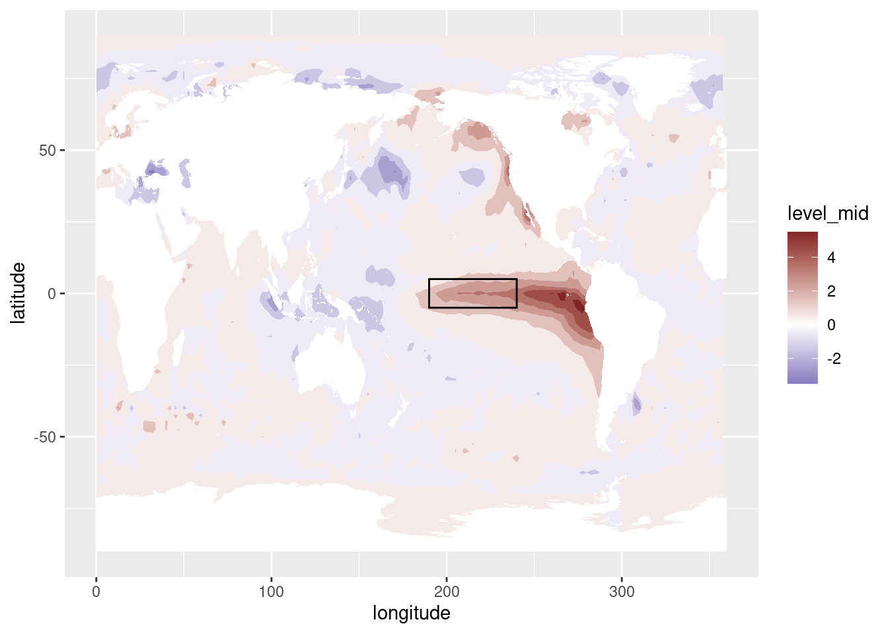
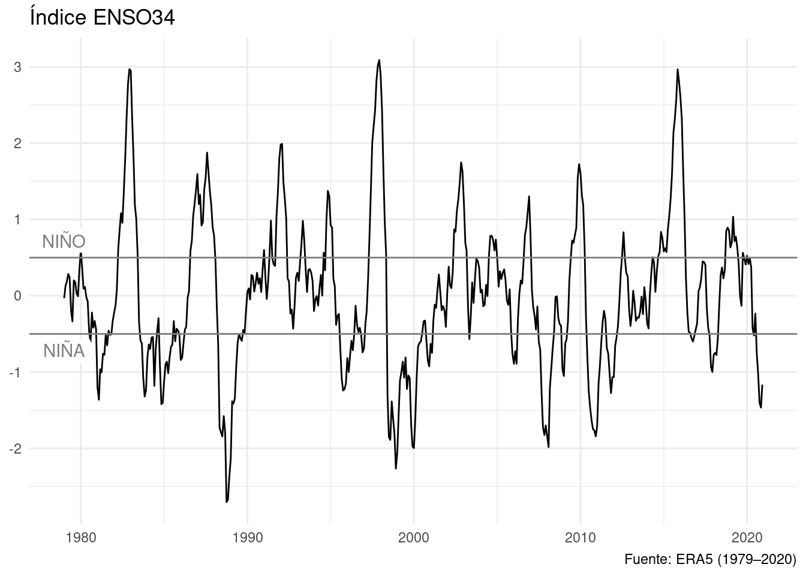

# Cargo los paquetes necesarios
library(magrittr)
library(ggplot2)
library(dplyr)
library(data.table)
library(metR)
Primero hay que leer los datos de temperatura del mar (SST) y de presión al nivel del mar (MSL).
datos <- ReadNetCDF("datos/temperatura_mar.nc", vars = c("sst", presion = "msl"))
Como ayuda, también
mapa <- function(fill = "white", colour = NA) {
geom_polygon(data = map_data("world2"), aes(long, lat, group = group),
fill = fill, colour = colour, inherit.aes = FALSE, size = 0.2)
}
La principal variación de SST y de la presión suele ser el ciclo anual, que es predecible y no es interesante. Entonces, lo primero que hacemos es crear dos variables nuevas, sst_a y presion_a con las anomalías de temperatura y presión con respecto al ciclo anual. Esto es, el valor de cada variable menos el valor medio para cada mes y cada punto de grilla.
data.table
datos[, `:=`(sst_a = sst - mean(sst),
presion_a = presion - mean(presion)),
by = .(longitude, latitude, month(time))]
dplyr
datos <- datos %>%
group_by(longitude, latitude, mes = month(time)) %>%
mutate(sst_a = sst - mean(sst),
presion_a = presion - mean(presion)) %>%
ungroup() %>%
select(-mes)
El Niño, o ENSO por El Niño Southern Oscillation, es una de los principales modos de variabilidad del océano. Se trata de variaciones de baja frecuencia en la temperatura de la superficie del mar en el Pacífico Ecuatorial. Durante los eventos positivos (El Niño) la temperatura de la superficie del mar en el la región oriental del Pacífico ecuatorial es más alta de lo normal, y en los eventos negativos (La Niña), la temperatura es más fría de lo normal. Esta oscilación tiene impactos globales, afectando la temperatura y la precipitación de regiones muy alejadas, algo conocido como teleconexiones.
Una de las formas más comunes de medir el ENSO es con el índice oceánico, que es la anomalía media estandarizada en una caja entre 170ºE y 120ºE y 5ºS y 5ºN, que se muestra en la siguiente figura.
datos %>%
filter(time == unique(time)[225]) %>%
ggplot(aes(longitude, latitude)) +
geom_contour_fill(aes(z = sst_a), na.fill = TRUE) +
mapa() +
annotate("rect", xmax = 240, xmin = 190, ymin = -5, ymax = 5, fill = NA, color = "black") +
scale_fill_divergent()

Entonces, antes que nada calculamos el índice de El Niño oceánico (ONI por la siglas de Oceanic Niño Index).
data.table
enso <- datos %>%
.[abs(latitude) < 5 & ConvertLongitude(longitude) %between% c(-170, -120)] %>%
.[, .(oni = mean(sst_a)), by = time] %>%
.[, oni := oni/sd(oni)]
dplyr
enso <- datos %>%
filter(abs(latitude) < 5 & between(ConvertLongitude(longitude), -170, -120)) %>%
group_by(time) %>%
summarise(oni = mean(sst_a)) %>%
ungroup() %>%
mutate(oni = oni/sd(oni))
(Técnicamente el ONI tiene también un promedio móvil de 3 meses, pero no hace tanta diferencia.)
¿Cómo evolucionó este índice a lo largo del tiempo? Podemos hacer un gráfico con el índice, marcando los valores de \(\pm0.5\), que definen los eventos Niño y Niña.
ggplot(enso, aes(time, oni)) +
geom_line() +
geom_hline(yintercept = c(-0.5, 0.5), color = "gray50") +
annotate("label", y = c(0.5, -0.5), x = lubridate::as_datetime("1979-01-01"),
label = c("NIÑO", "NIÑA"), vjust = c(-0.2, 1.2),
label.size = grid::unit(0,"lines"), color = "gray50") +
scale_x_datetime(name = NULL) +
scale_y_continuous(name = NULL) +
labs(title = "Índice ENSO34",
caption = "Fuente: ERA5 (1979–2020)") +
theme_minimal()

Se ven claramente algunos eventos niño particularmente fuertes, como el de 1983, 1998 o 2015, así como algunos eventos Niña también intensos, como en 1989.
Ahora podemos calcular los campos de regresión entre este índice y otras variables, presión a nivel del mar en este caso. Para eso hay que primero unir la tabla enso a los datos y luego calcular la regresión para cada punto de grilla.
data.table
enso_regresion <- datos %>%
.[enso, on = "time"] %>%
.[, FitLm(presion_a, oni), by = .(longitude, latitude)] %>%
.[term != "(Intercept)"]
dplyr
enso_regresion <- sst %>%
right_join(enso, by = "time") %>%
group_by(latitude, longitude) %>%
summarise(as.data.frame(FitLm(presion_a, oni))) %>%
ungroup() %>%
filter(term != "(Intercept)")
Y ahora que tenemos esto, podemos graficarlo.
enso_regresion %>%
ggplot(aes(longitude, latitude)) +
geom_contour_fill(aes(z = estimate, fill = ..level..), na.fill = 0,
breaks = AnchorBreaks(binwidth = 25, exclude = 0)) +
geom_contour_tanaka(aes(z = estimate), na.fill = 0,
breaks = AnchorBreaks(binwidth = 25, exclude = 0)) +
mapa(fill = NA, colour = "black") +
annotate("rect", xmax = 240, xmin = 190, ymin = -5, ymax = 5,
fill = NA, color = "black") +
scale_fill_divergent_discretised(name = "hPa") +
scale_x_longitude() +
scale_y_latitude() +
coord_quickmap() +
theme_minimal() +
labs(title = "Regresíon presión a nivel del mar con ENSO",
caption = "Fuente: ERA5 (1979–2020)")
En esta figura podemos ver las teleconexiones en acción. Los valores máximos de regresión entre la temperatura del mar y la presión al nivel del mar se da en la costa de la Antártica (el mar de Amundsen) e el hemisferio sur y en la región de las Aleutianas en el hemisferio norte.
LS0tCnRpdGxlOiAiUmVsYWNpw7NuIGVudHJlIHByZXNpw7NuIGEgbml2ZWwgZGVsIG1hciB5IEVOU08iCm91dHB1dDogCiAgaHRtbF9kb2N1bWVudDoKICAgIGNvZGVfZG93bmxvYWQ6IHRydWUKICAgIHRvYzogZmFsc2UKLS0tCgpgYGB7ciBzZXR1cCwgaW5jbHVkZT1GQUxTRX0Ka25pdHI6Om9wdHNfY2h1bmskc2V0KAogIGNhY2hlID0gVFJVRSwKICBlY2hvID0gVFJVRSwKICBtZXNzYWdlID0gRkFMU0UsCiAgd2FybmluZyA9IEZBTFNFCikKYGBgCgoKCgoKYGBge3J9CiMgQ2FyZ28gbG9zIHBhcXVldGVzIG5lY2VzYXJpb3MKbGlicmFyeShtYWdyaXR0cikKbGlicmFyeShnZ3Bsb3QyKQpsaWJyYXJ5KGRwbHlyKQpsaWJyYXJ5KGRhdGEudGFibGUpCmxpYnJhcnkobWV0UikKYGBgCgpQcmltZXJvIGhheSBxdWUgbGVlciBsb3MgZGF0b3MgZGUgdGVtcGVyYXR1cmEgZGVsIG1hciAoU1NUKSB5IGRlIHByZXNpw7NuIGFsIG5pdmVsIGRlbCBtYXIgKE1TTCkuIAoKYGBge3J9CmRhdG9zIDwtIFJlYWROZXRDREYoImRhdG9zL3RlbXBlcmF0dXJhX21hci5uYyIsIHZhcnMgPSBjKCJzc3QiLCBwcmVzaW9uID0gIm1zbCIpKQpgYGAKCkNvbW8gYXl1ZGEsIHRhbWJpw6luIAoKYGBge3J9Cm1hcGEgPC0gZnVuY3Rpb24oZmlsbCA9ICJ3aGl0ZSIsIGNvbG91ciA9IE5BKSB7CiAgZ2VvbV9wb2x5Z29uKGRhdGEgPSBtYXBfZGF0YSgid29ybGQyIiksIGFlcyhsb25nLCBsYXQsIGdyb3VwID0gZ3JvdXApLCAKICAgICAgICAgICAgICAgZmlsbCA9IGZpbGwsIGNvbG91ciA9IGNvbG91ciwgaW5oZXJpdC5hZXMgPSBGQUxTRSwgc2l6ZSA9IDAuMikKfQpgYGAKCkxhIHByaW5jaXBhbCB2YXJpYWNpw7NuIGRlIFNTVCB5IGRlIGxhIHByZXNpw7NuIHN1ZWxlIHNlciBlbCBjaWNsbyBhbnVhbCwgcXVlIGVzIHByZWRlY2libGUgeSBubyBlcyBpbnRlcmVzYW50ZS4KRW50b25jZXMsIGxvIHByaW1lcm8gcXVlIGhhY2Vtb3MgZXMgY3JlYXIgZG9zIHZhcmlhYmxlcyBudWV2YXMsIGBzc3RfYWAgeSBgcHJlc2lvbl9hYCBjb24gbGFzIGFub21hbMOtYXMgZGUgdGVtcGVyYXR1cmEgeSBwcmVzacOzbiBjb24gcmVzcGVjdG8gYWwgY2ljbG8gYW51YWwuIApFc3RvIGVzLCBlbCB2YWxvciBkZSBjYWRhIHZhcmlhYmxlIG1lbm9zIGVsIHZhbG9yIG1lZGlvIHBhcmEgY2FkYSBtZXMgeSBjYWRhIHB1bnRvIGRlIGdyaWxsYS4gCgojIyMgey50YWJzZXQgLnVubGlzdGVkIC51bm51bWJlcmVkfQoKIyMjIyBkYXRhLnRhYmxlCgpgYGB7cn0KZGF0b3NbLCBgOj1gKHNzdF9hID0gc3N0IC0gbWVhbihzc3QpLCAKICAgICAgICAgICAgIHByZXNpb25fYSA9IHByZXNpb24gLSBtZWFuKHByZXNpb24pKSwKICAgICAgYnkgPSAuKGxvbmdpdHVkZSwgbGF0aXR1ZGUsIG1vbnRoKHRpbWUpKV0KYGBgCgojIyMjIGRwbHlyCgpgYGB7ciwgZXZhbCA9IEZBTFNFfQpkYXRvcyA8LSBkYXRvcyAlPiUgCiAgZ3JvdXBfYnkobG9uZ2l0dWRlLCBsYXRpdHVkZSwgbWVzID0gbW9udGgodGltZSkpICU+JSAKICBtdXRhdGUoc3N0X2EgPSBzc3QgLSBtZWFuKHNzdCksIAogICAgICAgICBwcmVzaW9uX2EgPSBwcmVzaW9uIC0gbWVhbihwcmVzaW9uKSkgJT4lIAogIHVuZ3JvdXAoKSAlPiUgCiAgc2VsZWN0KC1tZXMpCmBgYAoKIyMjIHsudW5saXN0ZWQgLnVubnVtYmVyZWR9CgpFbCBOacOxbywgbyBFTlNPIHBvciBFbCBOacOxbyBTb3V0aGVybiBPc2NpbGxhdGlvbiwgZXMgdW5hIGRlIGxvcyBwcmluY2lwYWxlcyBtb2RvcyBkZSB2YXJpYWJpbGlkYWQgZGVsIG9jw6lhbm8uIApTZSB0cmF0YSBkZSB2YXJpYWNpb25lcyBkZSBiYWphIGZyZWN1ZW5jaWEgZW4gbGEgdGVtcGVyYXR1cmEgZGUgbGEgc3VwZXJmaWNpZSBkZWwgbWFyIGVuIGVsIFBhY8OtZmljbyBFY3VhdG9yaWFsLiAKRHVyYW50ZSBsb3MgZXZlbnRvcyBwb3NpdGl2b3MgKEVsIE5pw7FvKSBsYSB0ZW1wZXJhdHVyYSBkZSBsYSBzdXBlcmZpY2llIGRlbCBtYXIgZW4gZWwgbGEgcmVnacOzbiBvcmllbnRhbCBkZWwgUGFjw61maWNvIGVjdWF0b3JpYWwgZXMgbcOhcyBhbHRhIGRlIGxvIG5vcm1hbCwgeSBlbiBsb3MgZXZlbnRvcyBuZWdhdGl2b3MgKExhIE5pw7FhKSwgbGEgdGVtcGVyYXR1cmEgZXMgbcOhcyBmcsOtYSBkZSBsbyBub3JtYWwuIApFc3RhIG9zY2lsYWNpw7NuIHRpZW5lIGltcGFjdG9zIGdsb2JhbGVzLCBhZmVjdGFuZG8gbGEgdGVtcGVyYXR1cmEgeSBsYSBwcmVjaXBpdGFjacOzbiBkZSByZWdpb25lcyBtdXkgYWxlamFkYXMsIGFsZ28gY29ub2NpZG8gY29tbyB0ZWxlY29uZXhpb25lcy4gCgpVbmEgZGUgbGFzIGZvcm1hcyBtw6FzIGNvbXVuZXMgZGUgbWVkaXIgZWwgRU5TTyBlcyBjb24gZWwgw61uZGljZSBvY2XDoW5pY28sIHF1ZSBlcyBsYSBhbm9tYWzDrWEgbWVkaWEgZXN0YW5kYXJpemFkYSBlbiB1bmEgY2FqYSBlbnRyZSAxNzDCukUgeSAxMjDCukUgeSA1wrpTIHkgNcK6TiwgcXVlIHNlIG11ZXN0cmEgZW4gbGEgc2lndWllbnRlIGZpZ3VyYS4gCgpgYGB7cn0KZGF0b3MgJT4lIAogIGZpbHRlcih0aW1lID09IHVuaXF1ZSh0aW1lKVsyMjVdKSAlPiUgCiAgZ2dwbG90KGFlcyhsb25naXR1ZGUsIGxhdGl0dWRlKSkgKwogIGdlb21fY29udG91cl9maWxsKGFlcyh6ID0gc3N0X2EpLCBuYS5maWxsID0gVFJVRSkgKwogIG1hcGEoKSArCiAgYW5ub3RhdGUoInJlY3QiLCB4bWF4ID0gMjQwLCB4bWluID0gMTkwLCB5bWluID0gLTUsIHltYXggPSA1LCBmaWxsID0gTkEsIGNvbG9yID0gImJsYWNrIikgKwogIHNjYWxlX2ZpbGxfZGl2ZXJnZW50KCkKYGBgCgoKRW50b25jZXMsIGFudGVzIHF1ZSBuYWRhIGNhbGN1bGFtb3MgZWwgw61uZGljZSBkZSBFbCBOacOxbyBvY2XDoW5pY28gKE9OSSBwb3IgbGEgc2lnbGFzIGRlIE9jZWFuaWMgTmnDsW8gSW5kZXgpLiAKCiMjIyB7LnRhYnNldCAudW5saXN0ZWQgLnVubnVtYmVyZWR9CgojIyMjIGRhdGEudGFibGUKCmBgYHtyfQplbnNvIDwtIGRhdG9zICU+JSAKICAuW2FicyhsYXRpdHVkZSkgPCA1ICYgQ29udmVydExvbmdpdHVkZShsb25naXR1ZGUpICViZXR3ZWVuJSBjKC0xNzAsIC0xMjApXSAlPiUgCiAgLlssIC4ob25pID0gbWVhbihzc3RfYSkpLCBieSA9IHRpbWVdICU+JSAKICAuWywgb25pIDo9IG9uaS9zZChvbmkpXQpgYGAKCiMjIyMgZHBseXIKCmBgYHtyLCBldmFsID0gRkFMU0V9CmVuc28gPC0gZGF0b3MgJT4lIAogIGZpbHRlcihhYnMobGF0aXR1ZGUpIDwgNSAmIGJldHdlZW4oQ29udmVydExvbmdpdHVkZShsb25naXR1ZGUpLCAtMTcwLCAtMTIwKSkgJT4lIAogIGdyb3VwX2J5KHRpbWUpICU+JSAKICBzdW1tYXJpc2Uob25pID0gbWVhbihzc3RfYSkpICU+JSAKICB1bmdyb3VwKCkgJT4lIAogIG11dGF0ZShvbmkgPSBvbmkvc2Qob25pKSkKYGBgCgojIyMgey50YWJzZXQgLnVubGlzdGVkIC51bm51bWJlcmVkfQoKKFTDqWNuaWNhbWVudGUgZWwgT05JIHRpZW5lIHRhbWJpw6luIHVuIHByb21lZGlvIG3Ds3ZpbCBkZSAzIG1lc2VzLCBwZXJvIG5vIGhhY2UgdGFudGEgZGlmZXJlbmNpYS4pCgrCv0PDs21vIGV2b2x1Y2lvbsOzIGVzdGUgw61uZGljZSBhIGxvIGxhcmdvIGRlbCB0aWVtcG8/IApQb2RlbW9zIGhhY2VyIHVuIGdyw6FmaWNvIGNvbiBlbCDDrW5kaWNlLCBtYXJjYW5kbyBsb3MgdmFsb3JlcyBkZSAkXHBtMC41JCwgcXVlIGRlZmluZW4gbG9zIGV2ZW50b3MgTmnDsW8geSBOacOxYS4KCmBgYHtyfQpnZ3Bsb3QoZW5zbywgYWVzKHRpbWUsIG9uaSkpICsKICBnZW9tX2xpbmUoKSArCiAgZ2VvbV9obGluZSh5aW50ZXJjZXB0ID0gYygtMC41LCAwLjUpLCBjb2xvciA9ICJncmF5NTAiKSArIAogIGFubm90YXRlKCJsYWJlbCIsIHkgPSBjKDAuNSwgLTAuNSksIHggPSBsdWJyaWRhdGU6OmFzX2RhdGV0aW1lKCIxOTc5LTAxLTAxIiksCiAgICAgICAgICAgbGFiZWwgPSBjKCJOScORTyIsICJOScORQSIpLCB2anVzdCA9IGMoLTAuMiwgMS4yKSwgCiAgICAgICAgICAgbGFiZWwuc2l6ZSA9IGdyaWQ6OnVuaXQoMCwibGluZXMiKSwgY29sb3IgPSAiZ3JheTUwIikgKwogIHNjYWxlX3hfZGF0ZXRpbWUobmFtZSA9IE5VTEwpICsKICBzY2FsZV95X2NvbnRpbnVvdXMobmFtZSA9IE5VTEwpICsKICBsYWJzKHRpdGxlID0gIsONbmRpY2UgRU5TTzM0IiwgCiAgICAgICBjYXB0aW9uID0gIkZ1ZW50ZTogRVJBNSAoMTk3OeKAkzIwMjApIikgKwogIHRoZW1lX21pbmltYWwoKQpgYGAKClNlIHZlbiBjbGFyYW1lbnRlIGFsZ3Vub3MgZXZlbnRvcyBuacOxbyBwYXJ0aWN1bGFybWVudGUgZnVlcnRlcywgY29tbyBlbCBkZSAxOTgzLCAxOTk4IG8gMjAxNSwgYXPDrSBjb21vIGFsZ3Vub3MgZXZlbnRvcyBOacOxYSB0YW1iacOpbiBpbnRlbnNvcywgY29tbyBlbiAxOTg5LiAKCkFob3JhIHBvZGVtb3MgY2FsY3VsYXIgbG9zIGNhbXBvcyBkZSByZWdyZXNpw7NuIGVudHJlIGVzdGUgw61uZGljZSB5IG90cmFzIHZhcmlhYmxlcywgcHJlc2nDs24gYSBuaXZlbCBkZWwgbWFyIGVuIGVzdGUgY2Fzby4gClBhcmEgZXNvIGhheSBxdWUgcHJpbWVybyB1bmlyIGxhIHRhYmxhIGBlbnNvYCBhIGxvcyBkYXRvcyB5IGx1ZWdvIGNhbGN1bGFyIGxhIHJlZ3Jlc2nDs24gcGFyYSBjYWRhIHB1bnRvIGRlIGdyaWxsYS4gCgojIyMgey50YWJzZXQgLnVubGlzdGVkIC51bm51bWJlcmVkfQoKIyMjIyBkYXRhLnRhYmxlCgpgYGB7cn0KZW5zb19yZWdyZXNpb24gPC0gZGF0b3MgJT4lIAogIC5bZW5zbywgb24gPSAidGltZSJdICU+JSAKICAuWywgRml0TG0ocHJlc2lvbl9hLCBvbmkpLCBieSA9IC4obG9uZ2l0dWRlLCBsYXRpdHVkZSldICU+JSAKICAuW3Rlcm0gIT0gIihJbnRlcmNlcHQpIl0gCmBgYAoKIyMjIyBkcGx5cgoKYGBge3IsIGV2YWwgPSBGQUxTRX0KZW5zb19yZWdyZXNpb24gPC0gc3N0ICU+JSAKICByaWdodF9qb2luKGVuc28sIGJ5ID0gInRpbWUiKSAlPiUgCiAgZ3JvdXBfYnkobGF0aXR1ZGUsIGxvbmdpdHVkZSkgJT4lIAogIHN1bW1hcmlzZShhcy5kYXRhLmZyYW1lKEZpdExtKHByZXNpb25fYSwgb25pKSkpICU+JSAKICB1bmdyb3VwKCkgJT4lIAogIGZpbHRlcih0ZXJtICE9ICIoSW50ZXJjZXB0KSIpIApgYGAKCiMjIyB7LnRhYnNldCAudW5saXN0ZWQgLnVubnVtYmVyZWR9CgpZIGFob3JhIHF1ZSB0ZW5lbW9zIGVzdG8sIHBvZGVtb3MgZ3JhZmljYXJsby4gCgpgYGB7cn0KZW5zb19yZWdyZXNpb24gJT4lIAogIGdncGxvdChhZXMobG9uZ2l0dWRlLCBsYXRpdHVkZSkpICsKICBnZW9tX2NvbnRvdXJfZmlsbChhZXMoeiA9IGVzdGltYXRlLCBmaWxsID0gLi5sZXZlbC4uKSwgbmEuZmlsbCA9IDAsIAogICAgICAgICAgICAgICAgICAgIGJyZWFrcyA9IEFuY2hvckJyZWFrcyhiaW53aWR0aCA9IDI1LCBleGNsdWRlID0gMCkpICsKICBnZW9tX2NvbnRvdXJfdGFuYWthKGFlcyh6ID0gZXN0aW1hdGUpLCBuYS5maWxsID0gMCwgCiAgICAgICAgICAgICAgICAgICAgICBicmVha3MgPSBBbmNob3JCcmVha3MoYmlud2lkdGggPSAyNSwgZXhjbHVkZSA9IDApKSArCiAgbWFwYShmaWxsID0gTkEsIGNvbG91ciA9ICJibGFjayIpICArCiAgYW5ub3RhdGUoInJlY3QiLCB4bWF4ID0gMjQwLCB4bWluID0gMTkwLCB5bWluID0gLTUsIHltYXggPSA1LCAKICAgICAgICAgICBmaWxsID0gTkEsIGNvbG9yID0gImJsYWNrIikgKwogIHNjYWxlX2ZpbGxfZGl2ZXJnZW50X2Rpc2NyZXRpc2VkKG5hbWUgPSAiaFBhIikgKwogIHNjYWxlX3hfbG9uZ2l0dWRlKCkgKwogIHNjYWxlX3lfbGF0aXR1ZGUoKSArCiAgY29vcmRfcXVpY2ttYXAoKSArCiAgdGhlbWVfbWluaW1hbCgpICsKICBsYWJzKHRpdGxlID0gIlJlZ3Jlc8Otb24gcHJlc2nDs24gYSBuaXZlbCBkZWwgbWFyIGNvbiBFTlNPIiwgCiAgICAgICBjYXB0aW9uID0gIkZ1ZW50ZTogRVJBNSAoMTk3OeKAkzIwMjApIikKYGBgCgpFbiBlc3RhIGZpZ3VyYSBwb2RlbW9zIHZlciBsYXMgdGVsZWNvbmV4aW9uZXMgZW4gYWNjacOzbi4gTG9zIHZhbG9yZXMgbcOheGltb3MgZGUgcmVncmVzacOzbiBlbnRyZSBsYSB0ZW1wZXJhdHVyYSBkZWwgbWFyIHkgbGEgcHJlc2nDs24gYWwgbml2ZWwgZGVsIG1hciBzZSBkYSBlbiBsYSBjb3N0YSBkZSBsYSBBbnTDoXJ0aWNhIChlbCBtYXIgZGUgQW11bmRzZW4pIGUgZWwgaGVtaXNmZXJpbyBzdXIgeSBlbiBsYSByZWdpw7NuIGRlIGxhcyBBbGV1dGlhbmFzIGVuIGVsIGhlbWlzZmVyaW8gbm9ydGUuIAo=